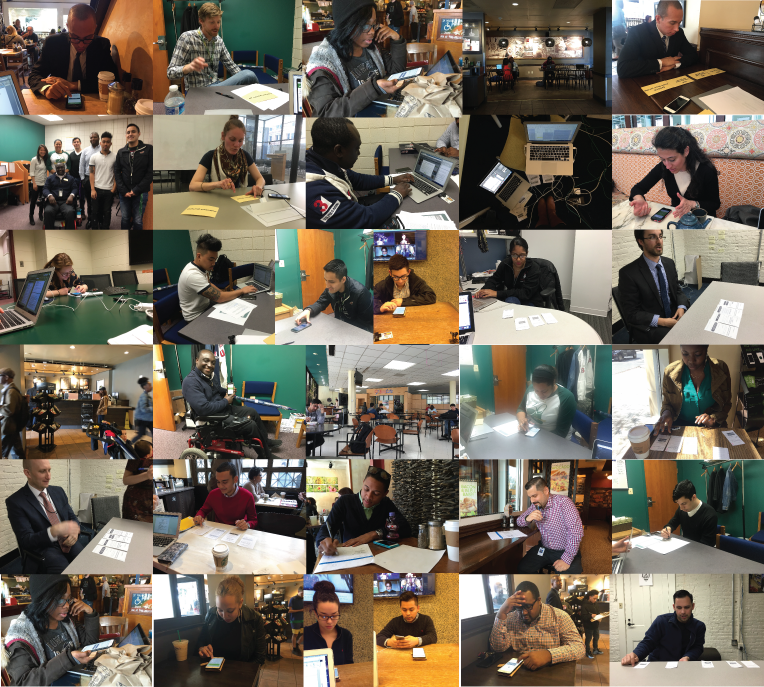
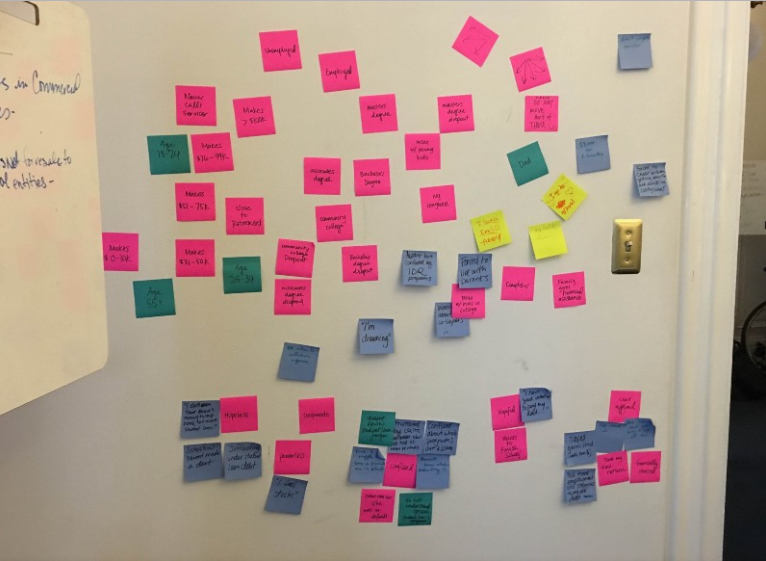
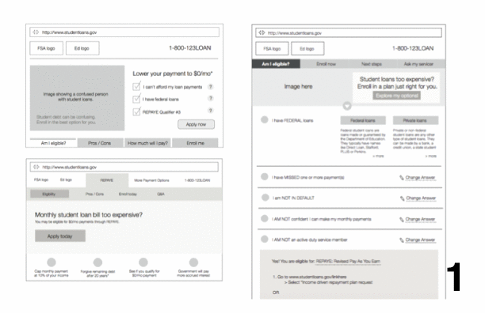
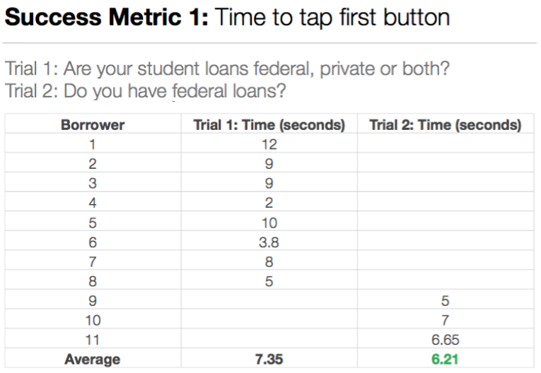

Problem: Too many borrowers are struggling to manage their monthly student loan payments, and one out of every five borrowers is behind on their Federal student loans. While there is a range of repayment plans that make repaying student loans more affordable, too often getting information about repayment plan options, figuring out which one is right for you, and how to enroll in the plans can be difficult.
Working with people struggling to manage student debt: We spoke with hundreds of people to understand their experiences managing student loan debt. They ranged from a grandmother in default to a cancer-survivor struggling to make ends meet to a newlywed with his dream job who just needed more help sorting through his options.
We met people in Washington, D.C., Arlington, Va., Chicago and New York, and called people across the country. We got in contact with people who had written to the President about student debt and listened to their stories and learned how they might use a tool for help.
A snapshot of some of the rounds of usability studies that we conducted to get feedback and observe people using our paper and digital prototypes.In a small suburb of Chicago, a single mother paying both her and her son’s student loans shared her story. She sees countless websites and payment options. “It’s hard to tell what’s a scam and what’s real.”
Because of conversations like these and many others, we built StudentLoans.gov/Repay — on the same site she can use to sign up for her repayment plan, so it’s clearer that this is an authoritative place for help.
To understand the perspective of public servants who work with federal student loans and help struggling borrowers every day, we spoke with dozens of people who work at FSA. We asked: “If you had a magic wand, what would be the three things you’d do?” The question helped shed light on different issues related to the repayment plan enrollment process they had learned as FSA employees, from technical suggestions to content improvements.
In our interviews with people struggling to manage student loans, we heard that people felt the process to repay their loans was so disjointed that they could easily get overwhelmed and freeze. People explained that they prioritized more immediate needs — food, gas, rent — over figuring out what to do about their student loans.
Brainstorming a solution:We knew we needed something simple, that could be done quickly on a phone, and that would offer a plan — a way forward. That resulted in the idea of creating a series of questions, ruthlessly edited to be as simple as possible, that result in a specific repayment plan option to consider, a brief description of the benefits, a list of materials needed, and an ordered list of how to get it done.
We drew inspiration from recipe apps and websites — they had a title, an overview, required materials (ingredients), and a simple list of steps to follow.
One of the group post-it note sessions to compile ideas and pull out trends from our research.Make paper prototypes before code:We used paper prototypes to conduct usability studies with our audience: student borrowers. It only took a handful of in-person tests on each prototype to quickly see the trends on whether or not the prototype was successful. We went through 19 versions of designs before the team wrote any lines of code.
By testing each element of the design on slips of paper before investing in writing software, we saved time and only built features we knew people could actually use. Here’s a fun GIF to take you through our design journey.
Once we worked through the pain points people experienced with low fidelity prototypes on paper, we moved into test phase with a higher fidelity, interactive prototype, staying true to our design standards.
In the Southwest, an EMT working for a non-profit hospital just had his wages garnished because his loans were in default. “I’ve been so frustrated. They started garnishing my wages, and I don’t understand how to get help.” StudentLoans.gov/Repay has the options and steps for people who want to get their student loans out of default.
Test and refine:We conducted usability testing and incorporated feedback to improve each release daily. Regardless of how quickly users moved through the prototype, would they be able to complete the steps to sign up for the option they chose? A trend we saw while testing the prototypes was that while people liked to “browse” this information on their phones, many people explained that they would do this work once at desktop computer — you can see there’s a prominent “email this” button to help users accomplish that goal.
We set success criteria for each usability session. If a feature or previous design was not successful, we quickly sketched up new versions until we had enough confidence to move forward.
Here are some improvements we made to the prototype to get users to the final repayment plan results faster:
Where we are today:I know how it feels to have student debt that seems unmanageable. Like many students, I took out loans and worked to pay my way through college. I struggled. I did what I could to make it work — I moved home with my parents, worked extra jobs to supplement my income, and counted every dollar. Figuring out how to manage my student loans and understanding the repayment options was overwhelming at times. Now, borrowers who aren’t sure where to start can go to StudentLoans.gov/Repay, and find the right student loan repayment option in 5 steps or less. Those options include more affordable repayment plans available to all borrowers thanks to changes made by the Obama Administration.